A little care.
A lot of together.
A calmer place for families, caregivers and trusted loved ones to coordinate the care they share.
Relay Bloom explores everyday planning, gentle check-ins and clearer sharing choices through 17 connected mobile screens.
Try the prototype ↓One circle.
Many ways
to care.
Soft clay. Frosted glass.
Made to feel human.
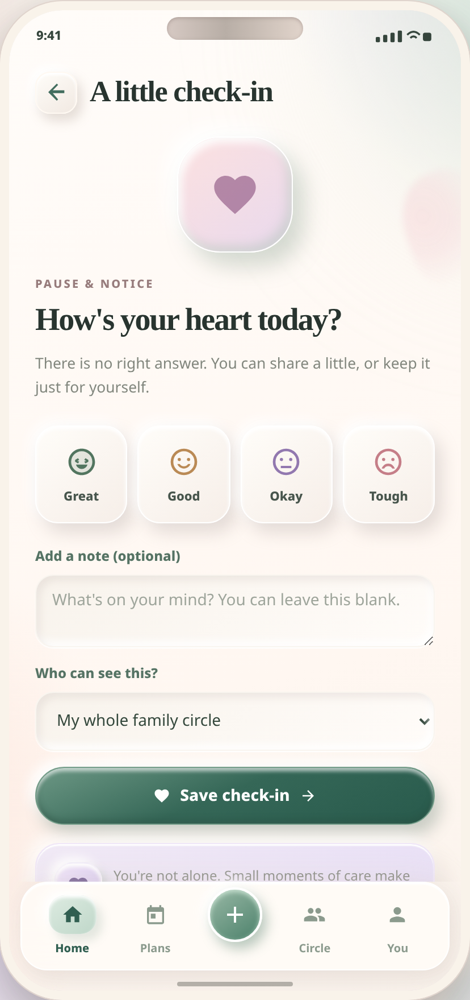
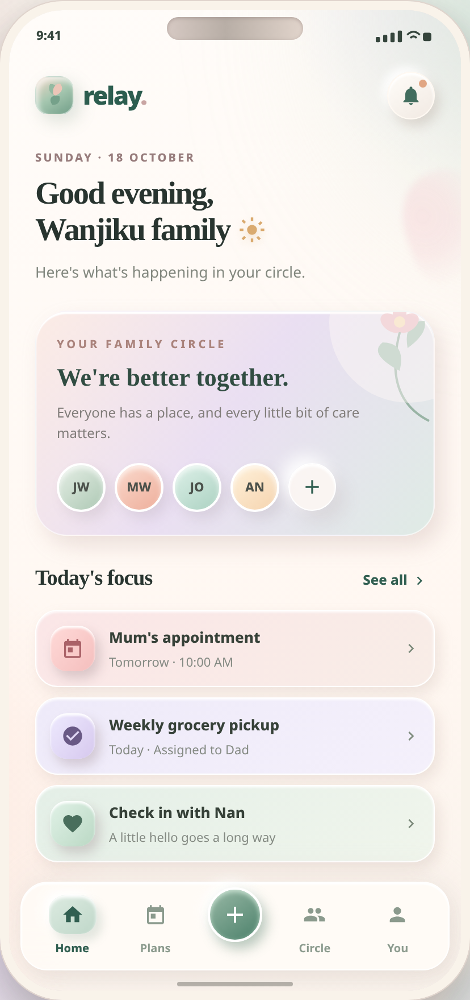
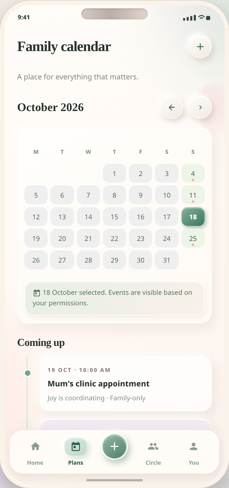
Make room for
the people who matter.
Appointments, shared responsibilities and family updates often live in separate conversations. Relay brings them into a shared circle, with thoughtful choices about who can see what.
Warm ivory, sage, blush and lavender support a gentle visual language. Botanical details, tactile controls and locally embedded Material-style SVG icons carry that language across the screens.
Care, from every angle.
Create your circle
Welcome people, name your circle and explore invitations and family roles.
Explore setup ↗ 02 / COORDINATIONShare the everyday
Browse shared plans, complete care tasks and add in-session tasks or calendar events.
Explore care tasks ↗ 03 / CONNECTIONA little check-in
Choose how you feel, add an optional note and decide who can see it.
Explore check-ins ↗ 04 / AGENCYYour circle. Your boundaries.
Explore sharing preferences, document access and privacy controls in the interface.
Explore privacy ↗An interactive design prototype with fictional sample data. Changes last for the current session. Account access, invitations, uploads, notifications and emergency calls are demonstrations, not connected services.
All 17 screens.
Select a screen to open its interactive view.
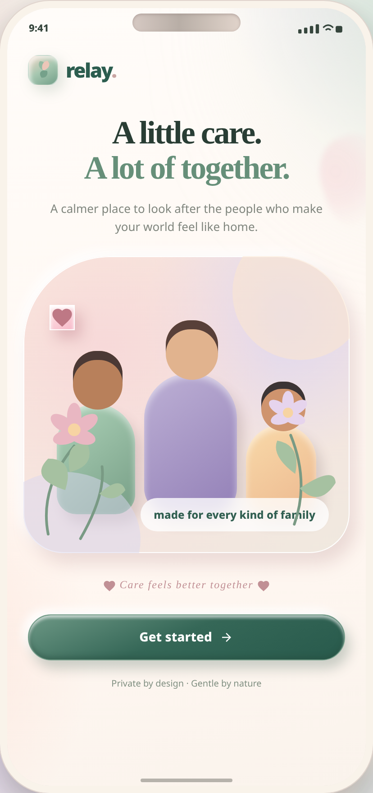
01 / Welcome ↗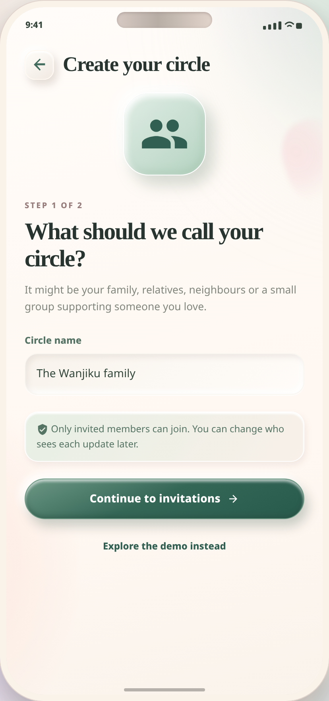
02 / Create circle ↗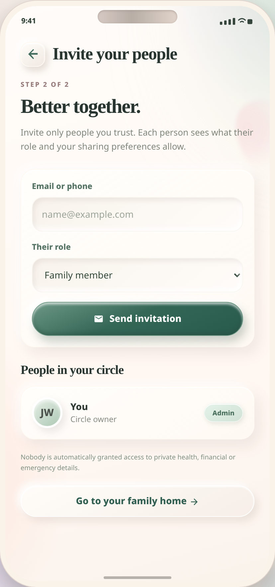
03 / Invite your people ↗04 / Family home ↗05 / Shared calendar ↗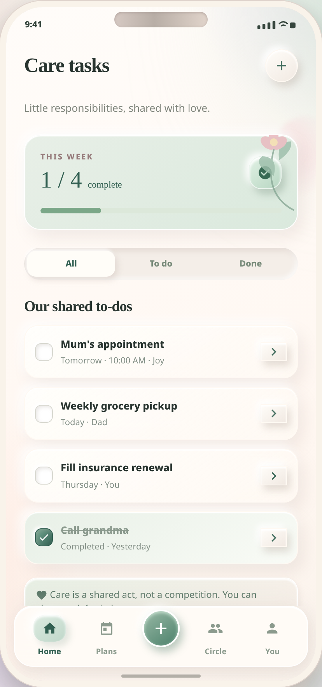
06 / Care tasks ↗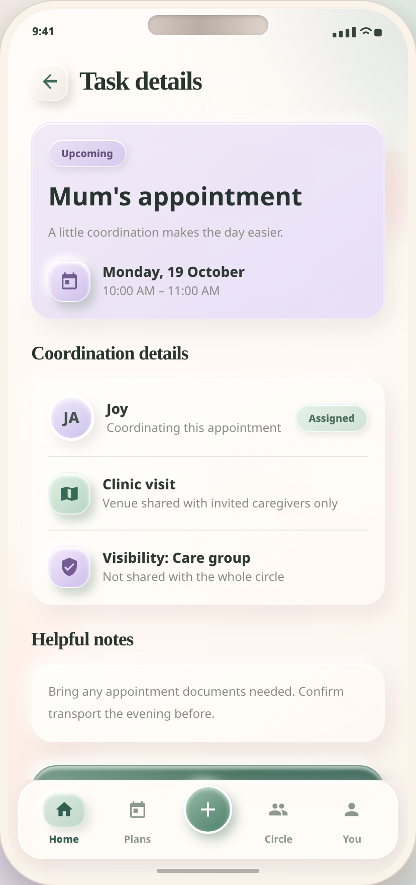
07 / Task details ↗08 / Check-in ↗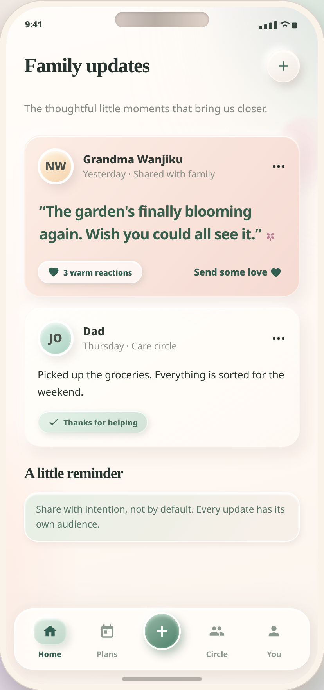
09 / Family updates ↗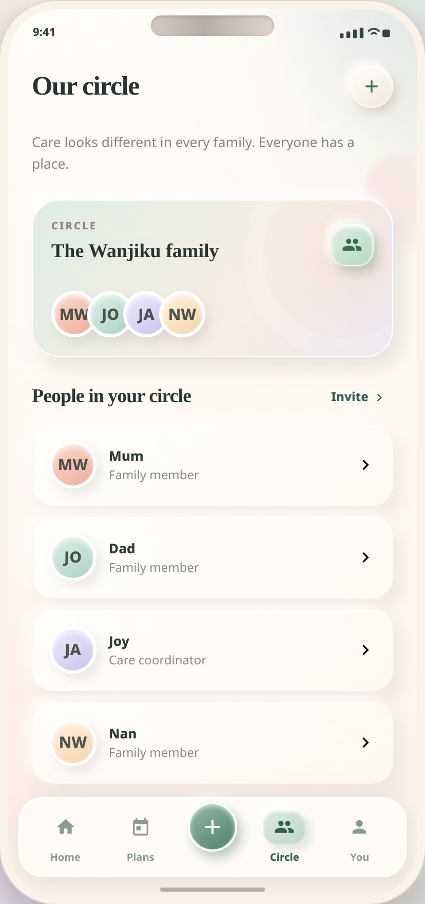
10 / Our circle ↗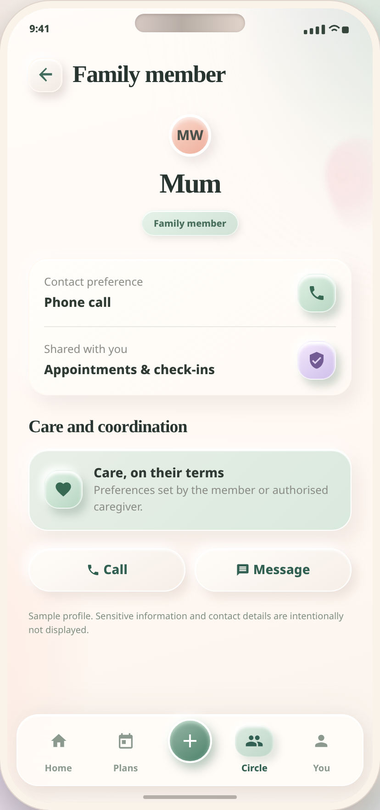
11 / Family member ↗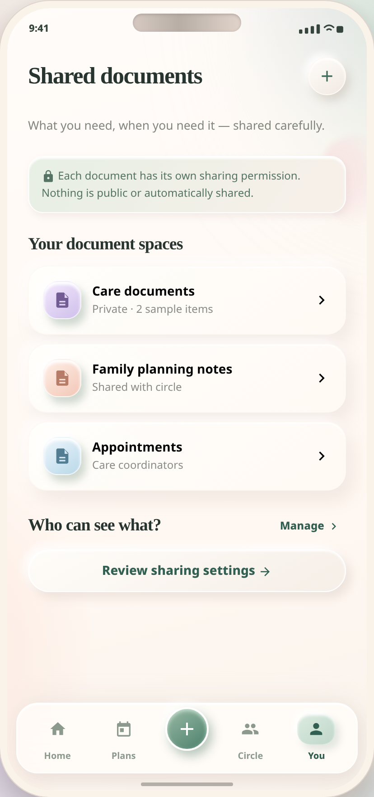
12 / Shared documents ↗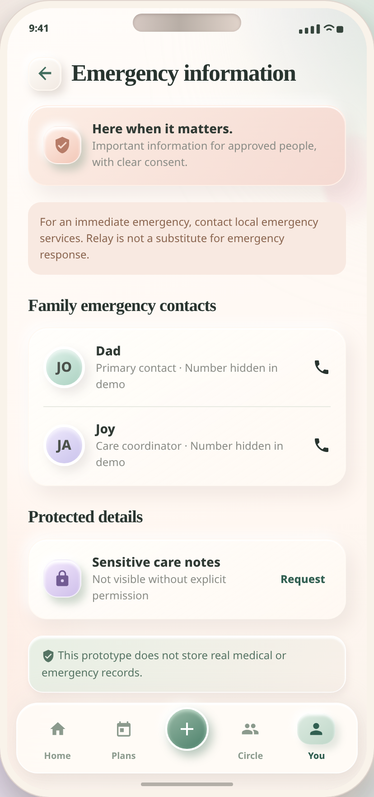
13 / Emergency information ↗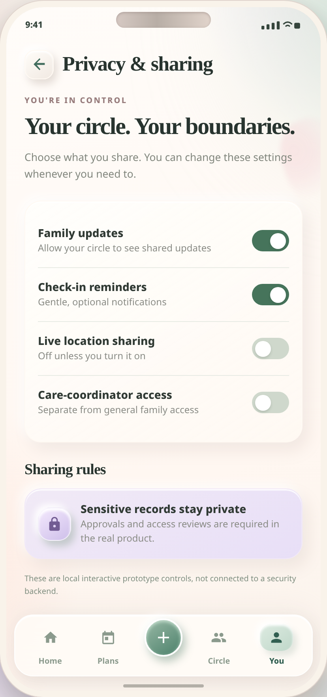
14 / Privacy & sharing ↗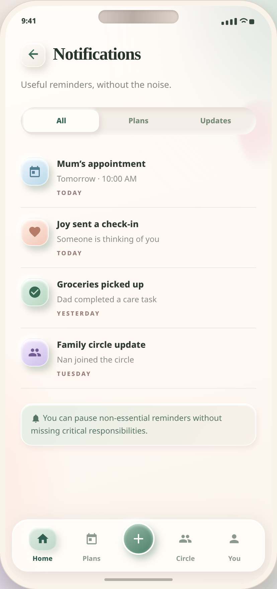
15 / Notifications ↗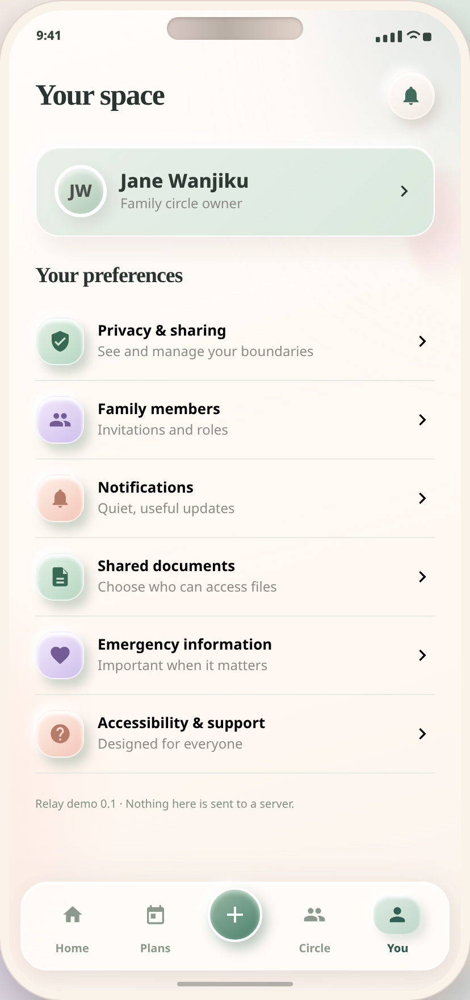
16 / Your settings ↗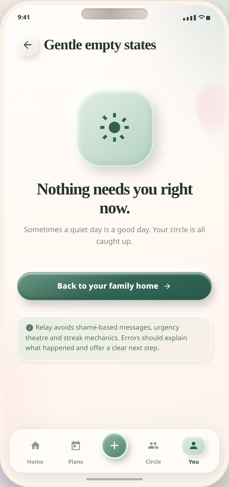
17 / Empty states ↗Step into your circle.
Navigate the screens, complete a task, add an event or explore a check-in.